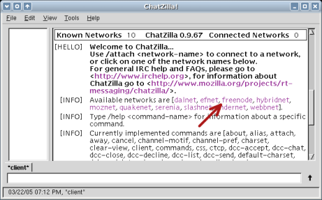
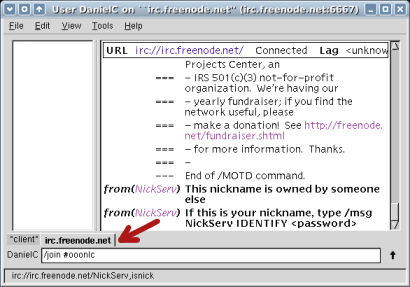

Join the IRC chat (Chatzilla)
Once Chatzilla is setup and running, it takes two steps to join the IRC chat:
|
(1) Join the server. On the main screen, click on the link that says freenode. Note: You may need to scroll to see this link. |
 |
|
(2) Join the channel. IRC chatrooms are called "channels". To join the OOo NL channel, type /join #ooonlc. Note: Notice the "#" in the channel name. IRC channels always start with a "#". |
 |